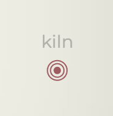
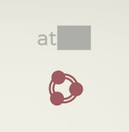

主武器
主武器是《指尖疾速》中初始武器，在游戏中扮演最重要的角色。当你拼写出敌人身上的一个词，主武器就会锁定该敌人。每个主武器有独特的效果和机制，需要你采用不同的策略才能高效地利用它们。
一些主武器强调打字时的速度（WPM），有一些则强调策略的使用。和游戏中其他类型的武器一样，主武器也可以升级和进化，随着游戏深入而增强它们的能力和效率。
主武器是《指尖疾速》中初始武器，在游戏中扮演最重要的角色。当你拼写出敌人身上的一个词，主武器就会锁定该敌人。每个主武器有独特的效果和机制，需要你采用不同的策略才能高效地利用它们。
一些主武器强调打字时的速度（WPM），有一些则强调策略的使用。和游戏中其他类型的武器一样，主武器也可以升级和进化，随着游戏深入而增强它们的能力和效率。
标签: 动能, 主要
通过极短时间内爆发式射击来毁灭敌人的武器。
名称 |
描述 |
|---|---|
| 霜咬 | 效果： 冰冻伤害：+10 冰冻几率：3% 影响基础伤害并受冰冻伤害系数影响。 |
| 霜咬II | 效果： 冰冻伤害：+20 动能伤害：-10 影响基础伤害。 |
| 反弹 | 效果： 投掷物连锁：3 连发枪投掷物会反弹到附近目标上，第一次命中后，后续造成50%伤害 |
| 反弹II | 效果： 投掷物连锁：+2 |
| 霰弹枪 | 效果： 投掷物计数：+5 投掷物散布：+400% 动能伤害：-10 连发枪会发射散布范围更大但是更弱的投掷物。伤害系数影响基础伤害。 |
| 霰弹枪II | 效果： 投掷物计数：+5 投掷物散布：+100% |
| 爆炸弹头 | 效果： 爆炸伤害：+10 动能伤害：-10 影响基础伤害。连发枪会装填爆炸子弹，对小范围内的目标造成爆炸伤害。 |
| 爆炸弹头II | 效果： 爆炸伤害：+15 动能伤害：-10 连发枪子弹的影响范围略微扩大。 |
名称 |
描述 |
|---|---|
| 放大式学习 | 进化：+10击杀 |
| 战斗数据 | 进化：+20击杀 |
| 专业护援 | 进化：+30击杀 |
| 全金属夹克 | 伤害：+10% |
| 穿甲升级 | 伤害：+20% |
| 穿刺者增强 | 伤害：+30% |
| 高级定位 | 暴击率：+1% 暴击伤害：+50% |
| 精确制导系统 | 暴击率：+2% 暴击伤害：+100% |
| 鹰眼集成 | 暴击率：+3% 暴击伤害：+200% |
| 载荷提升 | 攻击范围：+25% |
标签: 高温, 主要, 持续伤害
可以发射高精度的聚集光束来对敌人造成持续伤害。
名称 |
描述 |
|---|---|
| 冰冻射线 | 效果： 高温伤害：-25 冰冻伤害：+25 冰冻几率：8% 影响基础伤害。高温射线伤害类型会变为冰冻类型，对敌人施加冰冻几率会提高。 |
| 冰冻射线II | 效果： 冰冻伤害：+20 影响基础伤害。 |
| 反射 | 高温射线可以i穿过敌人并在屏幕边缘反射2x。 |
| 反射II | 高温射线可以i在屏幕边缘反射4x。 |
| 双刃 | 同时朝反方向发射光束，所有进化和升级效果都会作用于两个方向的光束。 |
| 爆破手 | 效果： 射速：+500% 高温射线会发射的独立的镭射光束，攻击多个目标，而不在发射持续的光束，但该武器仍算作持续伤害类武器。 |
| 爆破手II | 效果： 光束长度：+100% 伤害：+40% |
名称 |
描述 |
|---|---|
| 融核 | 进化：+10击杀 |
| 原初之火 | 进化：+20击杀 |
| 灭烬 | 进化：+30击杀 |
| 熊熊烈火 | 伤害：+10% |
| 极炙高温 | 伤害：+20% |
| 灭世爆发 | 伤害：+30% |
| 汇聚 | 射线宽度：+20% （攻击范围） |
| 辐光 | 射线宽度：+40% （攻击范围） |
| 聚光 | 射线宽度：+60% （攻击范围） |
| 快速引燃 | 射速：+10% |
| 疾速烈火 | 射速：+20% |
| 炼狱狂潮 | 射速：+30% |
标签: 爆炸, 主要
发射导弹群来轰炸目标及其周围；随时间充能。
名称 |
描述 |
|---|---|
| 火箭阵列 | 火力网会基于每个弹药条发射3 - 6，而非基于2 - 5。 |
| 火箭阵列II | 火力网会基于每个弹药条发射4 - 7，而非基于3 - 6。 |
| 地动山摇 | 接下来的几秒内，导弹会被部署入地底而非直接引爆并生成爆炸性冲击波。 |
| 地动山摇II | 地爆冲击： 范围： +25% 持续时间： +25% |
| 重新供给 | 现在战场会生成供给拾取道具。激活这些拾取道具会自动为你的主武器装填并让下一次攻击的伤害提升30%。 |
| 重新供给II | 供给拾取道具会让下一次攻击的爆炸范围30%。 |
名称 |
描述 |
|---|---|
| 顶级火力网 | 进化：+10 |
| 终极之围 | 进化：+20 |
| 死神的披风 | 进化：+30 |
| 冲击爆发 | 伤害：+10% |
| 毁灭一击 | 伤害：+20% |
| 灭世爆裂 | 伤害：+30% |
| 延展之触 | 攻击范围：+10% |
| 远程载荷 | 攻击范围：+20% |
| 全方位突击 | 攻击范围：+30% |
| 快速换弹 | 装填速度：+10% （射速） |
| 快速供给 | 装填速度：+20% （射速） |
| 极速充能 | 装填速度：+30% （射速） |
标签: 化学, 主要, 持续伤害
发射黏球来致残并伤害敌人。
名称 |
描述 |
|---|---|
| 史莱姆泡泡 | 在溅射区域内会生成史莱姆泡泡拾取道具 在激活后，史莱姆泡泡会爆炸，对周遭小范围内的敌人造成伤害并生成额外的溅射区域。 |
| 史莱姆泡泡II | 提升史莱姆泡泡的生成几率。 当泡泡失效时，有50%的几率自动爆炸。 |
| 感染 | 溅射射击效果： 施加状态效果几率：+5% 全局效果： 状态效果伤害：+30% |
| 感染II | 被状态效果杀死的敌人会爆炸并生成溅射区域 |
| 岩浆 | 效果： 化学伤害：-100% 高温伤害：+40 影响基础伤害。溅射射击的伤害类型会变为高温伤害。 |
| 岩浆II | 效果： 高温伤害：+20 影响基础伤害。 |
| 致病 | 溅射区域效果： 持续时间：-50% 溅射区域的范围会随着时间不断扩大。 |
名称 |
描述 |
|---|---|
| 高效施毒 | 进化：+10 |
| 神秘危毒 | 进化：+20 |
| 瘟疫召唤者 | 进化：+30 |
| 剧毒溅射 | 伤害：+10% |
| 猛毒爆发 | 伤害：+20% |
| 末世灾云 | 伤害：+30% |
| 弥留毒雾 | 攻击范围：10% |
| 神经元毒素 | 攻击范围：20% |
| 平流层空洞 | 攻击范围：30% |
| 缓慢消散 | 持续时间：10% |
| 半衰期延长 | 持续时间：20% |
| 无尽辐射 | 持续时间：30% |
标签: 电击, 无人机, 主要
指挥无人机群给敌人带来灭顶之灾。
名称 |
描述 |
|---|---|
| 同步 | 以集群意识击败的1个敌人后，有30%几率为随机的无人机类武器的进化进度+1。 |
| 同步II | 以集群意识击败的1个敌人后，有50%几率为随机的无人机类武器的进化进度+1，提升至50%。 |
| 激能螺旋 | 集群意识每瞄准3个敌人，在这些敌人间生成一个激能螺旋。 激能螺旋会周期性地释放电能脉冲，在整个屏幕中穿梭并造成电击伤害。 |
| 激能螺旋II | 效果：激能螺旋： 伤害：+30% 持续时间：+30% |
| 燃烧者 | 拼写单词会为计量表充能，充满时生成自爆无人机。 无人机会自动索敌，接触时爆炸，造成小范围爆炸伤害。 |
| 燃烧者II | 效果： 燃烧者：5 爆炸伤害：5 爆炸范围：+20 |
| 空域 | 集群意识瞄准的敌人会被减速并受到来自其他电击效果和武器的50%伤害。 |
| 空域II | 集群意识瞄准的敌人会受到禁锢效果的影响。 |
名称 |
描述 |
|---|---|
| 爆充 | 伤害：+10% |
| 激能螺旋 | 伤害：+20% |
| 暴风之呼唤 | 伤害：+30% |
| 捷步 | 速度：+10% |
| 飞速矩阵 | 速度：+20% |
| 风暴形态 | 速度：+30% |
| 过度繁殖 | 无人机数：+1 |
| 母体养育 | 无人机数：+2 |
| 法拉场 | 攻击范围：+10% |
| 穹顶之下 | 攻击范围：+20% |
| 风暴连锁 | 攻击范围：+30% |
| 扭曲枪火 | 射速：+10% |
| 火力全开 | 射速：+20% |
| 火花风暴 | 射速：+30% |
在一轮挑战中，当你的等级提升，你就会获得升级武器。一旦选择了这种武器，它便会进入你的武器库。每个武器有独特的激活方法，但绝大多数都可以通过打字激活，以主武器来瞄准。
你可以通过这种方式来获得最多4个武器。一旦武器进入你的武器库，它便可以在升级池中获得升级选项，你就可以强化它的能力了。
标签: 动能, 无人机
完成包含特定字母的词。 a, e, o 生成快速近程无人机，其数量等同于上方匹配数。
名称 |
描述 |
|---|---|
| 超级充能 | 每次生成的第20个幽灵会成为超级幽灵。 超级幽灵： +100%伤害 +50%持续时间 +50%速度 |
| 自毁 | 效果： 爆炸伤害：+50 幽灵消失时会自毁，造成爆炸伤害。影响基础伤害并受到爆炸伤害系数影响。 |
| 自毁II | 效果： 爆炸伤害：+50 攻击范围：+30% 影响基础伤害。 |
| 挥发性燃料 | 效果： 速度：+50% |
| 挥发性燃料II | 效果： 速度：50% 持续时间：-25% |
名称 |
描述 |
|---|---|
| 幽灵式学习 | 进化：+10击杀 |
| 幽灵专长 | 进化：+20击杀 |
| 镜花水月 | 进化：+30击杀 |
| 蜂群战术 | 伤害：+10% |
| 坐标系打击 | 伤害：+20% |
| 蜂巢思维 | 伤害：+30% |
| 铑电池 | 持续时间：+10% |
| 高能电池 | 持续时间：+20% |
| 能量核心过载 | 持续时间：+30% |
| 自我组装 | 完成由7个以上字母拼写成的词会生成一个额外的幽灵。 |
标签: 高温, 炮塔
部署会一座攻击范围内敌人的自动炮塔。
名称 |
描述 |
|---|---|
| 防御网格 | 效果： 炮塔：+1 |
| 坚固核心 | 效果： 动能伤害：+30 高热伤害：-30 哨兵现在会造成动能伤害而非高热伤害，并被视作动能武器 |
| 坚固核心II | 效果： 动能伤害：+20 全局效果： 所有动能效果/武器: 伤害：+20% |
| 至高观察者 | 全局效果 所有炮塔效果/武器： 范围：+50% |
| 紧急情况协议 | 当一个护盾增强器被摧毁时，哨兵会进入紧急情况协议模式，持续10秒。 紧急情况协议生效时： 攻击范围：+50% 射速：+100% |
| 紧急情况协议II | 紧急情况协议生效时： 伤害：+50% 旋转速度：{3} |
名称 |
描述 |
|---|---|
| 老道的观察者 | 进化：+10击杀 |
| 机警哨兵 | 进化：+20击杀 |
| 永恒守望者 | 进化：+30击杀 |
| 一触即发 | 射速：+10% |
| 疾速开火 | 射速：+20% |
| 闪电协议 | 射速：+30% |
| 穿甲弹夹 | 伤害：+10% |
| 战术装甲粉碎者 | 伤害：+20% |
| 外部穿透武器 | 伤害：+30% |
| 倍数瞄准镜 | 攻击范围：+10% |
| 增强瞄准镜 | 攻击范围：+20% |
| 精确瞄准系统 | 攻击范围：+30% |
标签: 电击, 炮塔, 持续伤害
完成以特定字母开头的词 b, c, d, e 部署会对敌人造成持续伤害的电磁炮塔。
名称 |
描述 |
|---|---|
| 线圈束 | 除了现存的字母外，额外生成一个特斯拉地雷。 |
| 电流灼烧 | evo_tesla_electricalBurn_v2_desc |
| 电流灼烧II | evo_tesla_electricalBurn_2_v2_desc |
| 限制区域 | 位于特斯拉地雷范围内的敌人受到电击伤害时，被禁锢的几率提升20% |
| 限制区域II | 禁锢伤害提升5，攻击范围提升30%。该效果会作用于任意来源的禁锢伤害并影响基础伤害。 |
名称 |
描述 |
|---|---|
| 传导大师 | 进化：+10击杀 |
| 伏特工艺 | 进化：+20击杀 |
| 放大域石 | 进化：+30击杀 |
| 强化线圈 | 持续时间：+10% |
| 强韧导体 | 持续时间：+20% |
| 超充电磁感应 | 持续时间：+30% |
| 过载 | 伤害：+10% |
| 电能激荡 | 伤害：+20% |
| 雷霆万钧 | 伤害：+30% |
| 放大领域 | 攻击范围：+10% |
| 地平线之系 | 攻击范围：+20% |
| 无限域石 | 攻击范围：+30% |
| 静态涌动 | 禁锢几率：+1% |
| 黑暗传导 | 禁锢几率：+3% |
| 电能过载 | 禁锢几率：+5% |
标签: 高温, 远程
对你最近攻击过的目标发射一束振荡粒子流。
名称 |
描述 |
|---|---|
| 双头 | 向相反方向发射额外一道振荡器投掷物。 |
| 球状闪电 | evo_oscillator_ballLightning_v2_desc |
| 球状闪电II | evo_oscillator_ballLightning_2_v2_desc |
| 稳定等离子体 | 振荡器投掷物会穿透敌人，第一个被击中的敌人之后，后续敌人受到50%伤害。 |
| 稳定等离子体II | 点燃伤害提升5。该效果会作用于任意来源的点燃伤害并影响基础伤害。 |
名称 |
描述 |
|---|---|
| 精准谐波 | 进化：+10击杀 |
| 自适应谐振器 | 进化：+20击杀 |
| 浪潮 | 进化：+30击杀 |
| 等离子引燃 | 伤害：+10% |
| 量子释放 | 伤害：+20% |
| 新星爆发 | 伤害：+30% |
| 地毯式轰炸 | 散布：+10% |
| 地球之眼 | 散布：+20% |
| 量子扩张 | 散布：+30% |
| 会心 | 暴击率：+1% 暴击系数：+50% |
| 弹无虚发 | 暴击率：+2% 暴击系数：+100% |
| 量子狂潮 | 暴击率：+3% 暴击系数：+200% |
标签: 爆炸, 远程
周期性地在随机地点生成目标指示器，指示器被激活后会发起轨道轰炸。
名称 |
描述 |
|---|---|
| 监管者 | 彗星会获得两个目标选项而非一个。 |
| 监管者II | 彗星会获得三个目标选项而非两个。 |
| 冰雨 | evo_meteor_iceRain_v2_desc |
| 冰雨II | evo_meteor_iceRain_2_v2_desc |
| 不休 | 效果： 攻击范围：-50% 射速：-50% 彗星会向你上一个目标的位置不断来袭。 |
| 不休II | 效果： 速度：+50% 暴击率：+10% |
名称 |
描述 |
|---|---|
| 锐利视野 | 进化：+10击杀 |
| 轨道视野 | 进化：+20击杀 |
| 精英侦察兵 | 进化：+30击杀 |
| 精准轰炸 | 伤害：+10% |
| 冲击增强 | 伤害：+20% |
| 天启 | 伤害：+30% |
| 传递加速 | 生成速率：+10% |
| 序列启动 | 生成速率：+20% |
| 死亡之雨 | 生成速率：+30% |
| 远射模块 | 攻击范围：+10% |
| 放大阵列 | 攻击范围：+20% |
| 灭世之触 | 攻击范围：+30% |
标签: 电击, 无人机, 持续伤害
完成包含特定字母的词。 i, o, u 生成电击射线无人机，其数量等同于上方匹配数。
名称 |
描述 |
|---|---|
| 精英猎手 | 每次生成的第12个猎手会成为精英猎手。 精英猎手： +100%伤害 +50%持续时间 +50%速度 +50%攻击范围 |
| 电能镖 | evo_hunter_electrifiedBolts_v2_desc |
| 电能镖II | evo_hunter_electrifiedBolts_2_v2_desc |
| 闪电链 | 猎手的攻击会额外攻击附近的1个敌人。 |
| 闪电链II | 猎手的攻击会额外攻击附近的2个敌人。 |
名称 |
描述 |
|---|---|
| 慧眼 | 进化：+10击杀 |
| 动态精准 | 进化：+20击杀 |
| 捕猎者 | 进化：+30击杀 |
| 电浪 | 伤害：+10% |
| 嚎啸者 | 伤害：+20% |
| 量子过载 | 伤害：+30% |
| 集聚射线 | 攻击范围：+10% |
| 定向释放 | 攻击范围：+20% |
| 雷瀑 | 攻击范围：+30% |
| 高效能源利用 | 持续时间：+10% |
| 摧毁方式优化 | 持续时间：+20% |
| 恒久矩阵 | 持续时间：+30% |
标签: 动能, 远程
生成巨型旋转飞刃并使其附着在主武器的攻击上，飞刃会到达屏幕边缘并对沿途所有敌人造成伤害。
名称 |
描述 |
|---|---|
| 双持 | 效果： 屠夫数量+1 |
| 烈火刀 | evo_chopper_flamingBlades_v2_desc |
| 烈火刀II | evo_chopper_flamingBlades_2_v2_desc |
| 回旋镖 | 屠夫在到达屏幕边缘后会返回主武器处。 |
| 回旋镖II | 效果： 速度：+75% 射速：+50% |
| 浴血 | 效果： 对流血敌人的伤害： +10% 受流血状态影响的敌人在被屠夫击杀后，有10%几率在一段时间内触发全局双倍伤害。 |
| 浴血II | 效果： 对流血敌人的伤害： +25% 对25%造成双倍上海的几率提升。 |
| 锯齿发射器 | 效果： 流血几率： +7% 流血伤害： +25% 连发枪流血几率： +7% 用两把高攻速锯齿刃代替屠夫，对锥形区域内目标造成伤害。 |
| 锯齿发射器II | 效果： 流血几率： +12% 流血伤害： +50% 连发枪流血伤害： +12% 多发射2把锯齿刃。 |
名称 |
描述 |
|---|---|
| 绞肉机 | 进化：+10击杀 |
| 伤疤收集者 | 进化：+20击杀 |
| 断头台 | 进化：+30击杀 |
| 锐利边缘 | 伤害：+10% |
| 蝉翼之刃 | 伤害：+20% |
| 剃刀之刃 | 伤害：+30% |
| 旋翼增强 | 旋转速率：+10% |
| 涡轮增压 | 旋转速率：+20% |
| 超光速引擎旋翼 | 旋转速率：+30% |
| 长刃 | 攻击范围：+10% |
| 延展之触 | 攻击范围：+20% |
| 延展神妙 | 攻击范围：+30% |
| 锋利剃刀 | 流血几率：+1% |
| 放血 | 流血几率：+3% |
| 血流如注 | 流血几率：+5% |
标签: 爆炸, 无人机
完成以特定字母开头的词 f, g, h, i 生成缓慢移动的地雷，一接触敌人便会爆炸。
名称 |
描述 |
|---|---|
| 地雷部署者 | 除了现存的字母外，额外生成地雷。 |
| 注入 | evo_minefield_infusion_v2_desc |
| 注入II | evo_minefield_infusion_2_v2_desc |
| 猎手追踪者 | 效果： 速度：+200% 攻击范围：-50% 地雷会自动追踪随机的目标。 |
| 猎手追踪者II | 效果： 生成地雷：+1 速度：+100% |
| 脏弹 | 效果： 化学伤害：+5 溅射枪伤害: +10% 地雷爆炸时生成3滩粘球。 |
| 脏弹II | 效果： 化学伤害：+5 溅射枪伤害: +10% 移动时，地雷会周期性地发射一滩粘球。 |
| 回归地雷 | 主炮塔会根据【地雷阵】的地雷数量周期性地生成地雷（数量向下取整）。生成速率由【地雷阵】的射速决定。 |
| 回归地雷II | 回归地雷的生成速度提高30%并会额外生成1个。 |
名称 |
描述 |
|---|---|
| AI起爆器 | 进化：+10击杀 |
| 精准弹道学 | 进化：+20击杀 |
| 毁灭者 | 进化：+30击杀 |
| 载荷增强装置 | 伤害：+10% |
| 重炮 | 伤害：+20% |
| 弹头增大 | 伤害：+30% |
| 范围扩张 | 攻击范围：+10% |
| 战场覆盖 | 攻击范围：+20% |
| 无边领域 | 攻击范围：+30% |
| 快速制造者 | 生成地雷+1 |
| 反馈循环 | 回归地雷： 生成速率：+20% （射速） |
| 天瀑协议 | 回归地雷： 生成速率：+30% （射速） |
标签: 动能, 炮塔
完成以特定字母开头的词 j, k, l, m 部署一个四向的轮辐式刀刃陷阱。
名称 |
描述 |
|---|---|
| 利刃贮藏 | 除了现存的字母外，额外生成一个利刃陷阱。 |
| 剧毒外衣 | 效果： 化学伤害：+5 疫病几率：10% 影响基础伤害，受化学伤害系数影响。 |
| 剧毒外衣II | 效果： 化学伤害：+5 疫病几率：+5% 影响基础伤害。 |
| 链锯刃 | 利刃陷阱的流血几率会额外加上其暴击几率。 |
| 链锯刃II | 流血伤害提升5。该效果会作用于任意来源的流血伤害并影响基础伤害。 |
名称 |
描述 |
|---|---|
| 改良陷阱 | 进化：+10击杀 |
| 反应漩涡 | 进化：+20击杀 |
| 撕裂者 | 进化：+30击杀 |
| 坚固切割者 | 伤害：+10% |
| 钛合金切割者 | 伤害：+20% |
| 钻石切割者 | 伤害：+30% |
| 已润滑部件 | 旋转速率：+10% |
| 精准部件 | 旋转速率：+20% |
| 量子部件箱 | 旋转速率：+30% |
| 改良发条装置 | 持续时间：+10% |
| 无暇发条装置 | 持续时间：+20% |
| 铑充能装置 | 持续时间：+30% |
标签: 化学, 远程
完成以特定字母开头的词 n, o, p, q 布置一个环绕主武器飞行的球体，对其路径上所有目标造成伤害。
名称 |
描述 |
|---|---|
| 连续统一体 | 除了现存的字母外，额外生成一个环游者。 |
| 风暴之环 | 效果： 化学伤害： -70 电击伤害： +70 影响基础伤害并收到电击伤害系数影响。 |
| 风暴之环II | 效果： 电击伤害：+20 禁锢几率： +5% 影响基础伤害。 |
| 分身 | 生成一个运行轨迹相反的环游者。 |
| 拴绳 | 现在环游者会通过绳子被紧紧拴在主武器上，绳子对扫到的敌人造成的伤害等同于环游者伤害的30%。 |
| 拴绳II | 绳子对扫到的敌人造成的伤害等同于环游者伤害的{2}。 |
名称 |
描述 |
|---|---|
| 螺旋上升 | 进化：+10 |
| 循环智慧 | 进化：+20 |
| 思维循环 | 进化：+30 |
| 螺旋尖矛 | 伤害：+10% |
| 动能核心 | 伤害：+20% |
| 近日点 | 伤害：+30% |
| 向量之环 | 攻击范围：+10% |
| 轨道延展器 | 攻击范围：+20% |
| 辐散 | 攻击范围：+30% |
| 旋转平衡器 | 持续时长：+10% |
| 节奏锚定器 | 持续时长：+20% |
| 接续 | 持续时长：+30% |
| 脉冲引擎 | 速度：+10% |
| 大地驱动 | 速度：+20% |
| 造涡者 | 速度：+30% |
标签: 高温, 无人机
马上部署一架对敌人发射镭射光束的无人机；激活燃料拾取道具来为守卫注满燃料，这样做会消耗燃料并且当燃料耗尽时会休眠。
名称 |
描述 |
|---|---|
| 毒性守卫 | 效果： 高温伤害：-20 化学伤害：+20 影响基础伤害。守卫伤害类型变为化学伤害。 |
| 毒性守卫II | 效果： 化学伤害：+15 影响基础伤害。 |
| 实验性燃料 | 特殊的燃料拾取道具会为守卫提供暂时的加成。只有一种加成可以一直生效。 |
| 实验性燃料II | 所有特殊燃料拾取道具加成+50%，加成持续时间+50%。 |
| 守卫小队 | 效果： 伤害：-25% 无人机：+1 守卫现在是两架无人机，而非一架。 |
| 守卫小队II | 效果： 伤害：-25% 无人机：+1 守卫现在是三架无人机，而非两架。 |
名称 |
描述 |
|---|---|
| 永恒哨兵 | 进化：+10 |
| 无上保卫者 | 进化：+20 |
| 登神之盾 | 进化：+30 |
| 先锋冲击 | 伤害：+10% |
| 守护者之怒 | 伤害：+20% |
| 哨兵之怒 | 伤害：+30% |
| 神射手透镜 | 攻击范围：+10% |
| 远射增强 | 攻击范围：+20% |
| 观察者之明悟 | 攻击范围：+30% |
| 不屈之身 | 持续时长：+10% |
| 永恒余烬 | 持续时长：+20% |
| 不灭之火 | 持续时长：+30% |
| 雷霆反射 | 速度：+10% |
| 迅捷守卫 | 速度：+20% |
| 快速警戒 | 速度：+30% |
在《指尖疾速》中，敌人是基于一个内部衡量标准——威胁度，由程序生成的，威胁度会随着游戏深入而提升。在试炼模式中，威胁度是当前试炼等级的乘数，每个更高的等级都会相应地变难。在无尽模式中，威胁度会根据玩家的等级并基于一个自适应浮动系统来调整，数值越高，设置的难度越高。
敌人分为特殊敌人和精英敌人，在总体威胁度等级的限制下，每种敌人都有其生成速率的上限。
无人机是一种会无休止地向你的主武器进攻的敌人。他们偶尔会以两种强化形态出现：
体积增大： 其生命值为之前的三倍，更难击败。
速度更快：其移动速度为之前的两倍，解决它们变得更迫在眉睫。
| 图像 | 描述 |
|---|---|
 |
生命值: 120 伤害: 40 |
 |
生命值: 300 伤害: 60 |
|  | 生命值: 750 伤害: 90 |
 |
生命值: 1500 伤害: 120 |
 |
生命值: 2700 伤害: 150 |
 |
生命值: 4800 伤害: 180 |
 |
生命值: 8700 伤害: 210 |
护盾无人机是一种特殊的无人机，拥有可再生的护盾。它有额外的护盾条：护盾条在生命值条上方，在一段时间未承受伤害后，护盾将恢复。
| 图像 | 描述 |
|---|---|
 |
生命值: 150 护盾: 200 伤害: 50 |
 |
生命值: 300 护盾: 400 伤害: 100 |
 |
生命值: 600 护盾: 800 伤害: 150 |
 |
生命值: 1200 护盾: 1600 伤害: 200 |
 |
生命值: 3600 护盾: 4800 伤害: 250 |
追踪者是一种特殊的无人机，刚进入战场时词语的大部分内容都是隐蔽的，随着拼写的进行，剩余部分才会逐渐显现，需要你谨慎而快速的应对。
| 图像 | 描述 |
|---|---|
 |
生命值: 600 伤害: 80 |
|  | 生命值: 1200 伤害: 120 |
 |
生命值: 2400 伤害: 160 |
 |
生命值: 7200 伤害: 200 |
诡枪手会逗留在关卡边缘，并向你的主武器持续发射坚固的投掷物直至它被消灭。
| 图像 | 描述 |
|---|---|
 |
生命值: 450 伤害: 25 |
 |
生命值: 900 伤害: 25 |
 |
生命值: 1800 伤害: 25 |
 |
生命值: 3600 伤害: 25 |
 |
生命值: 10800 伤害: 25 |
分裂者刚进入战场时看似很容易应对，但其实它由多个部分组成。当它的一部分被摧毁蚀，便会丧失完整性，分裂成多个独立的敌人。
| 图像 | 描述 |
|---|---|
 |
分裂碎片数量: 4 分裂碎片生命值: 525 分裂碎片伤害: 40 |
 |
分裂碎片数量: 5 分裂碎片生命值: 750 分裂碎片伤害: 40 |
 |
分裂碎片数量: 6 分裂碎片生命值: 975 分裂碎片伤害: 40 |
看守者是在游戏后期会出现的精英敌人，拥有围绕自身旋转的护盾，阻挡护盾面向方向袭来的攻击。另外，当看守者在场时，它会为周围其他敌人提供保护性的光环，令被保护的敌人处于无敌状态直到看守者被消灭。
| 图像 | 描述 |
|---|---|
 |
生命值: 450 |
群聚者是一种精英敌人，会周期性地命令成群的低级敌人向主武器进攻，直到自身被消灭。
| 图像 | 描述 |
|---|---|
 |
生命值: 3000 |
当你在挑战时激活一个宝箱，你就会获得战利品道具。在弹出的随机战利品选择界面中，你可以选择一个带有被动效果的加成，在接下来的游戏中你都可以从中受益。
战利品道具的品质分为普通，优质和稀有。品质高低决定了他们出现在战利品选择界面的几率，在试炼模式中击败一个Boss会给予你一个宝箱，里面只包含稀有品质的道具。
名称 |
描述 |
|---|---|
| 先知 | 如果在升级、进化或获得战利品时没有重随次数，你自动获得1重随机会。 |
| 暂时用品 | 所有无人机类武器： 无人机生成几率：35% |
| 劫掠 | 战利品选项+1 |
| 多重目标 | 你每拥有一个武器，所有远程类武器+1%暴击率。 |
| 巨型磁铁 | 当拾取道具即将消失时，你有50%几率自动拾取它们。 |
| 霜蚀 | 被冰冻的敌人会受到持续伤害。 |
| 尸体爆炸 | 当一名敌人被爆炸类暴击伤害摧毁时，在其周围触发一系列爆炸。 |
| 奖励 | 当一名敌人被暴击伤害摧毁时，有30%几率生成重随/护盾/生命值拾取道具。 |
| 余震 | 暴击伤害可以施加状态效果。 |
| 吸血惊情 | 获得等同于5%动能伤害的生命值。 |
| 智慧 | 在拾取护盾道具时，所有武器进化的进度增加10个击杀。 |
| 佞臣 | 在拾取重随道具时，对屏幕上所有敌人造成0至100之间的随机伤害。 |
| 坚毅不倒 | 在护盾被摧毁时，有30%几率获得双倍伤害道具。 |
| 三倍伤害 | 在双倍伤害持续过程中，每个生成的双倍伤害道具会变成三倍伤害道具。 |
| 碎裂 | 被冰冻的敌人所受到的伤害增加50%。伤害系数会相乘而非相加。 |
| 苦修 | 在退出战利品界面时，每有一个未使用的重随机会，获得持续20秒的+10%伤害效果。 |
| 和谐之道 | 所有装配的武器获得1进化等级。 |
| 不朽 | 当你的主武器将被摧毁时，其生命值会降低至1。该技能有2分钟的冷却时间。 |
| 启蒙 | 当一名敌人被暴击伤害摧毁时，武器进化进度获得+5击杀。 |
| 愈发接近 | 在敌方词语被摧毁后仍然完成该词可使伤害+10%，持续10秒，该效果最多叠加3层。 |
| 杀戮欲望 | 所有无人机类武器： 伤害+50% |
| 行刑者 | 所有炮塔类武器： 伤害+50% |
| 恶化 | 所有远程类武器： 伤害+50% |
名称 |
描述 |
|---|---|
| 海啸 | 所有爆炸类武器： 攻击范围：+25% |
| 冲击波 | 所有爆炸类武器： 伤害：+25% |
| 湮灭 | 所有爆炸类武器： 暴击系数：+100% |
| 降临 | 所有爆炸类武器： 双倍伤害拾取道具： 掉率几率：+2% |
| 粉碎射击 | 所有动能类武器： 伤害：+25% |
| 爆发 | 所有动能类武器： 射速：+25% |
| 穿透者 | 所有动能类武器： 暴击率：+2% |
| 先兆 | 所有动能类武器： 流血几率：+4% |
| 炼狱 | 所有高温类武器： 伤害：+25% |
| 等离子体 | 所有高温类武器： 攻击范围：+25% |
| 不死鸟 | 所有高温类武器： 重随次数：+5% |
| 岩浆奔流 | 所有高温类武器： 点燃几率：+4% |
| 极寒冻结 | 所有冰冻类武器： 伤害：+25% |
| 冰川 | 所有冰冻类武器： 冰冻几率：+4% |
| 反击者 | 所有冰冻类武器： 护盾几率：+5% |
| 冰之复苏 | 所有冰冻类武器： 持续时间：+25% |
| 过载 | 所有电击类武器： 禁锢几率：+4% |
| 究极风暴 | 所有电击类武器： 伤害：+25% |
| 放大器 | 所有电击类武器： 射速：+25% |
| 奇点 | 所有电击类武器： 持续时间：+25% |
| 接触传染 | 所有化学类武器： 疫病几率： +4% |
| 脓毒症 | 所有化学类武器： 伤害：+25% |
| 痉挛 | 所有化学类武器： 射速：+25% |
| 衰败 | 所有化学类武器： 持续时间：+25% |
| 无限 | 所有无人机类武器： 持续时间：+25% |
| 疾速飞行器 | 所有无人机类武器： 速度：+25% |
| 集群意识 | 所有无人机类武器： 伤害：+25% |
| 霜弑 | 所有无人机类武器： 冰冻掉落几率：+2% |
| 全面提升 | 所有远程类武器： 攻击范围：+25% |
| 高速链接 | 所有远程类武器： 速度：+25% |
| 最高指令 | 所有远程类武器： 伤害：+25% |
| 能量注入器 | 所有炮塔类武器： 持续时间：+25% |
| 地狱风暴 | 所有炮塔类武器： 射速：+25% |
| 精密仪器 | 所有炮塔类武器： 伤害：+25% |
| 屠杀 | 所有状态效果： 伤害：+25% |
| 折磨 | 所有状态效果： 持续时间：+25% |
| 中大奖！ | 所有战利品效果： 伤害：+25% |
| 灾祸 | 所有战利品武器： 暴击率：+2% |
| 狂潮 | 所有助力效果： 伤害：+25% |
| 超越 | 所有助力效果： 范围：+25% |
| 武器库 | 所有武器： 伤害：+12.5% |
| 救星 | 所有武器： 持续时间：+12.5% |
| 观星者 | 所有武器： 攻击范围：+12.5% |
| 近距离平射 | 在主武器附近被击中的敌人受到+20%伤害。 |
| 恶化 | 所有武器： 状态几率：+2% |
| 极冰科技 | 冰冻拾取道具： 掉落几率：+2% |
| 战时状态 | 双倍伤害拾取道具： 掉落几率：+4% |
| 皮纳塔 | 所有武器： 战利品掉落几率：+2% |
| 玻璃大炮 | 所有武器： 伤害：+30% 主武器： 最大生命值：-50% |
| 重新生成 | 不再生成生命值拾取道具。 当你激活一个战利品/冰冻/双倍伤害/重随/护盾拾取道具时，回复最大生命值的5%。 |
| 眼中钉 | 持续伤害类武器可以暴击。 |
| 破碎 | 所有动能类武器在攻击被冰冻的敌人时获得+5%暴击率。 |
| 韧性 | 激活护盾拾取道具时会使你的全局持续时间提升10%，持续10秒。效果最多叠加3层。 |
| 赌徒 | 最大重随次数＋1，直到拥有6次。 |
| 保护者 | 最大护盾数＋1，直到拥有4个。 |
| 无暇 | 每17次完美输入会让你的全局射速提升5%。 |
| 释放 | 拼写错误时，每有17次完美输入，对所有敌人造成20爆炸伤害。 |
| 火上加油 | 所有持续伤害类武器： +35%射速 |
| 枯萎 | 所有状态效果： +35%射速 |
名称 |
描述 |
|---|---|
| 炸裂 | 所有爆炸类武器： 攻击范围：+2% |
| 引爆 | 所有爆炸类武器： 伤害：+2% |
| 撞毁 | 所有动能类武器： 伤害：+2% |
| 迸发 | 所有动能类武器： 射速：+2% |
| 炙烤 | 所有高温类武器： 伤害：+2% |
| 余烬 | 所有高温类武器： 攻击范围：+2% |
| 冻土 | 所有冰冻类武器： 伤害：+2% |
| 寒颤 | 所有冰冻类武器： 持续时间：+2% |
| 电浪 | 所有电击类武器： 伤害：+2% |
| 激涌 | 所有电击类武器： 射速：+2% |
| 意识上载 | 所有无人机类武器： 持续时间：+2% |
| 针刺 | 所有无人机类武器： 伤害：+2% |
| 罗网 | 所有远程类武器： 攻击范围：+2% |
| 打击 | 所有远程类武器： 伤害：+2% |
| 磐石 | 所有炮塔类武器： 持续时间：+2% |
| 轰炸 | 所有炮塔类武器： 伤害：+2% |
| 弊病 | 所有状态效果： 伤害：+2% |
| 共鸣 | 所有状态效果： 持续时间：+2% |
| 主宰 | 所有武器： 伤害：+1% |
| 持久 | 所有武器： 持续时间：+1% |
| 映射 | 所有武器： 攻击范围：+1% |
| 溅射 | 所有爆炸类武器： 攻击范围：+15% |
| 冲击 | 所有爆炸类武器： 伤害：+15% |
| 蒸发 | 所有爆炸类武器： 暴击系数：+75% |
| 湮灭 | 所有爆炸类武器： 双倍伤害拾取道具： 掉率几率：+1% |
| 中空弹 | 所有动能类武器： 伤害：+15% |
| 爆发 | 所有动能类武器： 射速：+15% |
| 穿透 | 所有动能类武器： 暴击率：+1% |
| 死神 | 所有动能类武器： 流血几率：+2% |
| 灼烧 | 所有高温类武器： 伤害：+15% |
| 辐热 | 所有高温类武器： 攻击范围：+15% |
| 重生 | 所有高温类武器： 重随次数：+2% |
| 可燃 | 所有高温类武器： 点燃几率：+2% |
| 失温症 | 所有冰冻类武器： 伤害：+15% |
| 零度以下 | 所有冰冻类武器： 冰冻几率：+2% |
| 偏移 | 所有冰冻类武器： 护盾几率：+2% |
| 冷却剂 | 所有冰冻类武器： 持续时间：+15% |
| 潜藏充能 | 所有电击类武器： 禁锢几率：+2% |
| 电容器 | 所有电击类武器： 伤害：+15% |
| 调制器 | 所有电击类武器： 射速：+15% |
| 集中 | 所有电击类武器： 持续时间：+15% |
| 污渍 | 所有化学类武器： 疫病几率： +2% |
| 毒素 | 所有化学类武器： 伤害：+15% |
| 颤动 | 所有化学类武器： 射速：+15% |
| 弥留 | 所有化学类武器： 持续时间：+15% |
| 延展 | 所有无人机类武器： 持续时间：+15% |
| 刺击 | 所有无人机类武器： 速度：+15% |
| 自动机 | 所有无人机类武器： 伤害：+15% |
| 冰冷的心 | 所有无人机类武器： 冰冻掉落几率：+1% |
| 信号增强 | 所有远程类武器： 攻击范围：+15% |
| 无延迟 | 所有远程类武器： 速度：+15% |
| 操作系统 | 所有远程类武器： 伤害：+15% |
| 主级发动机 | 所有炮塔类武器： 持续时间：+15% |
| 自动大炮 | 所有炮塔类武器： 射速：+15% |
| 校准 | 所有炮塔类武器： 伤害：+15% |
| 强力损耗 | 所有状态效果： 伤害：+15% |
| 受灾 | 所有状态效果： 持续时间：+15% |
| 大风刮来的 | 所有战利品效果： 伤害：+15% |
| 秘密 | 所有战利品效果： 暴击率：+1% |
| 过载 | 所有助力效果： 伤害：+15% |
| 测距仪 | 所有助力效果： 范围：+15% |
| 军备 | 所有武器： 伤害：+5% |
| 急救包 | 所有武器： 持续时间：+5% |
| 望远镜 | 所有武器： 攻击范围：+5% |
| 急救包 | 向你的仓库加入3个急救包。 急救包可使主炮塔回复至多30%的最大生命值。 |
| 弹头 | 向你的仓库加入2个弹头。 弹头会以主武器为中心，向外引发一系列强力爆炸。 |
| 血清 | 向你的仓库加入2支血清。 使用血清可在10秒内提升25%暴击率。 |
| 冰核 | 向你的仓库加入2个冰核。 冰核会触发全局冰冻效果。 |
| 致死药 | 向你的仓库加入2个致死药。 觅死药会触发全局双倍伤害效果(不对敌人生效)。 |
| 焰浪 | 向你的仓库加入2个焰浪。 焰浪会消耗当前主炮塔10%的生命值来燃烧视野内所有可见的敌人。 |
| 原爆点 | 当目标接近主武器时，高温类武器造成+20%伤害。 |
| 制冷剂 | 冰冻拾取道具： 持续时间：+20% 掉落几率：+1% |
| 脆弱 | 双倍伤害拾取道具： 持续时间：+20% 掉落几率：+1% |
| 精准 | 所有武器： 暴击率：+1% 暴击系数：+50% |
| 医疗包 | 回复100生命值。 当前生命值：150/150 |
| 护盾 | ＋1护盾。 当前护盾：0/3 |
| 重随 | ＋1重随次数。 当前重随次数：3/5 |
| 苦痛者 | 每个苦痛者提高+4%持续伤害。该效果在主炮塔附近时翻倍。 |
助力是一种永久性的升级，可以通过使用硬币（§）来解锁，硬币是你在挑战中可以获得的一种游戏内货币。在每轮挑战中，玩家拥有有限的槽位来装备已经解锁的助力，不同恶兆等级下的槽位数量不同。
每个助力通常有特定的条件来决定其效果。要最大程度地利用你的助力，你需要考虑不同助力组合所带来的化学反应，以及把它们和你想要采用的战术搭配起来。
名称 |
花费 |
描述 |
|---|---|---|
| 披甲 | 50 §, 200 § |
主武器： 生命值+50% |
| 渴望 | 50 § | 在每次试炼或无尽模式开始时，等级提升1。在无尽模式中每存活4分钟，等级提升1。 |
| 赌徒 | 50 § | 每次使用重随机会后，主武器伤害+20%，持续20秒。 |
| 纯洁 | 100 § | 每次完美输入会提升+1.5%暴击率。 |
| 迷雾 | 200 §, 500 § |
如果你的生命值低于50%，全局射速+50%。 |
| 奉献 | 200 § | 每有1个空武器槽位，主武器伤害+25%。在升级时，至少有一个选项会获得提升。 |
名称 |
花费 |
描述 |
|---|---|---|
| 舰队 | 200 § | 每次生成一架无人机时，有20%几率额外生成一架。 |
| 多样性 | 50 § | 当装配非无人机类型武器时，所有无人机的持续时间提升20%。 |
| 闪电战 | 50 § | 无人机速度的提升同样会作用于无人机的伤害。 |
| 报应 | 300 § | 当一面护盾被击破时，所有现存的无人机会自毁，对敌人造成爆炸伤害。 |
| 替罪羊 | 100 § | 拼写错误会随机摧毁一架无人机，不再被视作错误。 |
| 溺爱 | 200 § | 无人机消失时会掉落拾取道具。 |
名称 |
花费 |
描述 |
|---|---|---|
| 堡垒 | 100 §, 400 § |
每次炮塔进化会让主武器的最大生命值+50。 |
| 互联 | 50 § | 其他每座炮塔会使所有炮塔射速+10%，最多提升至+50%。 |
| 战场情报 | 50 § | 激活一个拾取道具会使所有现存炮塔攻击范围+30%，该效果不可叠加。 |
| 暗黑传递 | 500 § | 生成一个会在现存炮塔之间随机弹跳的投掷物，该投掷物会造成电击伤害。 |
| 观察者 | 100 § | 如果在3秒内你没有发动任何攻击，直至你的下一次攻击前，炮塔伤害+30%。 |
| 弱点 | 200 § | 在炮塔攻击攻击范围内的敌人承受来自其他来源的伤害时，该伤害提升30%。 |
名称 |
花费 |
描述 |
|---|---|---|
| 腐蚀 | 500 § | 持续伤害可以暴击。 |
| 七鳃鳗 | 200 § | 在主武器附近造成的持续伤害会回复主武器1点生命值。 |
| 强韧 | 100 §, 300 § |
所有持续伤害类武器的持续时间提升35%。 |
| 苦痛者集群 | 50 § | 将苦痛者加入至战利品池。每个苦痛者+3%持续伤害，在主武器附近时该效果翻倍。 |
| 信念 | 100 § | 如果你的重随次数保持在最大值，持续伤害类武器的射速+40%。 |
| 感染者 | 300 §, 500 § |
持续伤害类武器施加状态效果的几率+3%。 |
名称 |
花费 |
描述 |
|---|---|---|
| 近身搏斗 | 100 § | 所有远程伤害被视为发生在主武器附近。 |
| 三角钉 | 200 § | 在远程武器暴击时，生成12个三角钉，对通过的敌人造成伤害，并基于该伤害提升流血几率。 |
| 腐蚀性弹药 | 500 § | 有几率掉落腐蚀性弹药－20秒内远程类武器的基础伤害增加10点化学伤害。 |
| 隐私 | 50 § | 每触发一个战利品效果，所有远程伤害提高15%。 |
| 拯救 | 100 § | 如果你的护盾面数保持在最大值，远程武器的攻击范围+40%。 |
| 狙击手 | 200 § | 远程武器攻击范围的提升同样会作用于远程武器的伤害。 |
名称 |
花费 |
描述 |
|---|---|---|
| 电流爆发 | 200 § | 电击的持续时间相关的升级会将其25%的数额转化为电击禁锢几率。 |
| 风暴电池 | 500 § | 主炮塔对附近敌人造成电击伤害。每装备一件电击类武器，基础伤害获得提升。 |
| 火花 | 300 § | 当电击类武器暴击时，释放6个电火花，电火花的伤害会随着暴击率与暴击系数的改变而变化。 |
| 高效网格 | 100 § | 每装备一件非电击类武器，所有电击类持续时间提升10%。 |
| 暴力放电 | 300 § | 禁锢造成更高伤害，范围更大。被禁锢杀死的敌人有50%的几率将该效果传递给附近的敌人。 |
| 电塔 | 100 § | 主武器的基础电击伤害+5，所有电击类武器的伤害提升10%。 |
名称 |
花费 |
描述 |
|---|---|---|
| 火焰术 | 200 § | 每有一名被点燃的敌人，高温伤害提升2%。点燃敌人时基于效果的持续时间和伤害造成额外的高温伤害。 |
| 灼烧 | 200 § | 远程增益也会作用于主武器附近的高温武器/效果所造成的伤害。 |
| 熔炉核心 | 100 § | 主炮塔的基础高温伤害+5，所有高温伤害提升10%。 |
| 火球术 | 500 § | 主武器进行攻击时会释放出一个缓慢飞行的火球，造成高温伤害。最多存在1个火球。 |
| 焰浪 | 250 § | 向你的初始仓库加入{1}个焰浪。消耗当前主炮塔10%的生命值来燃烧视野内所有可见的敌人。 |
| 烈焰荣光 | 50 § | 主武器附近的敌人受到的高温伤害+25%，在受到高温伤害时有额外12%的几率被点燃。 |
欢迎来到《指尖疾速：打字狂潮》的官方百科！在一款打字生存类游戏里测试你的打字技巧，用速度和准确作为武器保卫你自己！利用强大的工具来彻底改变你的输出方式，对抗一波又一波的敌人。快来Steam上探索更多关于这款游戏的好玩之处吧：【指尖疾速：打字狂潮】(https://store.steampowered.com/app/2400160/Glyphica_Typing_Survival/)。
本百科是包含游戏特色、机制以及抢先体验版本可玩内容的综合指引。我们希望能让信息一直保持在最新状态，向着正式版本（1.0.版本）的发布迈进。本百科以表格的方式呈现不同模块的内容，会随着游戏的开发而经常更新。